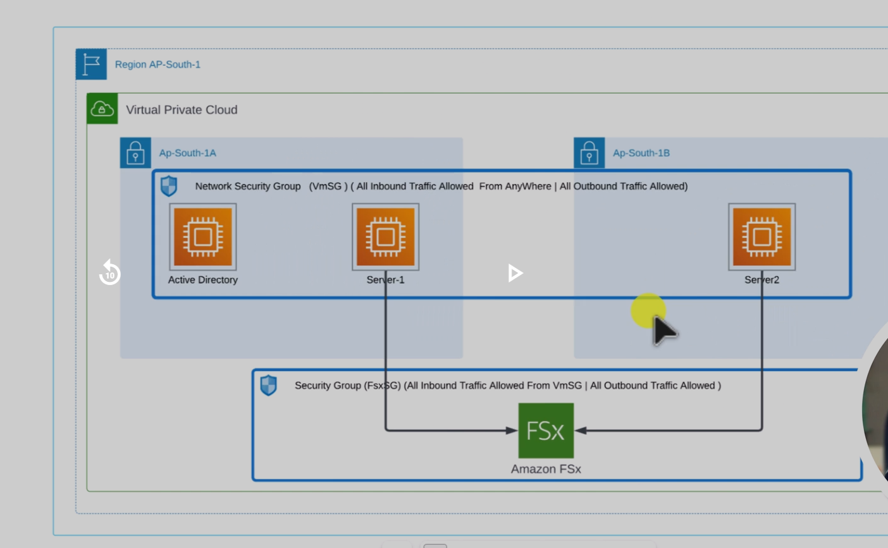

FSX with Windows Active Directory Setup Guide

✅ Step 1: Create Security Groups
1.1 VmSG (for all EC2)
- Inbound: Allow All traffic (0.0.0.0/0) – for lab
- Outbound: All allowed (default)
1.2 FSxSG (for FSx)
- Inbound: Allow All traffic from VmSG
- Outbound: All allowed
✅ Step 2: Launch EC2 Windows Instances
Repeat the below for each instance: AD-Server, Server-1, and Server-2
- AMI: Windows Server 2019 Base
- Instance Type: t3.medium
- Subnet:
- AD-Server: ap-south-1a
- Server-1: ap-south-1a
- Server-2: ap-south-1b
- Security Group: VmSG
- Key Pair: Choose or create one (needed for RDP)
✅ Step 3: Change Administrator Password
Immediately after launching, for each instance:
- RDP into each EC2 instance using the key pair
- Open Command Prompt or PowerShell as Administrator
- Run the command:
net user Administrator Matrix@123
💡 Optional: Disable password complexity temporarily with secedit commands.
✅ Step 4: Configure Active Directory
Part 1: Add Active Directory Domain Services (AD DS)
Use Server Manager → Add Roles and Features → Install AD DS role.
Part 2: Promote Server to Domain Controller
- Deployment: Add a new forest
- Root domain:
corp.example.com
- Keep defaults (DNS, Global Catalog)
- DSRM password:
Matrix@123
- Reboot after installation
✅ Step 5: Join Server-1 & Server-2 to Domain
On each server:
- Set Preferred DNS to private IP of AD-Server
- Join domain:
corp.example.com
- Use domain admin credentials (Administrator / Matrix@123)
- Reboot
🛠️ Using sysdm.cpl → Change Computer Name → Select Domain → Enter credentials.
✅ Step 6: Create Amazon FSx (Windows File Server)
- Go to Amazon FSx → Create File System
- Choose: Windows File Server
- VPC: Default VPC
- Subnets: ap-south-1a and ap-south-1b
- AD Domain:
corp.example.com
- Credentials: Domain admin
- Security Group: FSxSG
⚡ Takes ~15 minutes to create.
✅ Step 7: Map FSx Share
On Server-1 & Server-2 run:
net use Z: \\<fsx-dns>\share /user:corp\Administrator Matrix@123
✅ Verification
On AD-Server, check in Active Directory Users and Computers (ADUC):
- Expand:
corp.example.com → Computers
- You should see: Server-1, Server-2, Amazon FSx
✅ Lab Setup Complete!
- Windows EC2s with known passwords
- Working AD domain
- FSx joined to AD
- Servers accessing shared storage